نصب سیستم عامل دبیان
۱. زمانی که کامپیوتر شما برای اولین بار بالا میآید نیاز دارید تا بوت را از طریق CD/DVD یا فلش یو اس بی که در بخش قبلی برای ساخت دیسک نصاب دبیان مورد استفاده قرار دادید انجام دهید.پس شما نیاز دارید که منوی بوت بروید.متدی که برای اینکار استفاده میشود در کامپیوترهای مختلف متفاوت است. برای مثال در کامپیوترهای Dell پس از روشن شدن کامپیوتر با فشردن کلید F12 منوی بوت فعال می شود. برای دیگر سیستمها کلید ESC میتواند چنین کاری انجام دهد. در اپل کلید Option را هنگام بالا آمدن سیستم فشرده و زمانی که Startup Manager بالا آمد آن را رها کنید. بر روی هر پلتفورمی که باشید در ابتدا که وارد منوی بوت شدید فلش یو ایس بی خود را که در بخشهای قبل آماده کردید را انتخاب کنید.
زمانی که نصاب دبیان شما از رویCD/DVD یا فلش یو اس بی بوت شد باید تصویری شبیه به تصویر زیر مشاهده کنید. Install را انتخاب کنید.
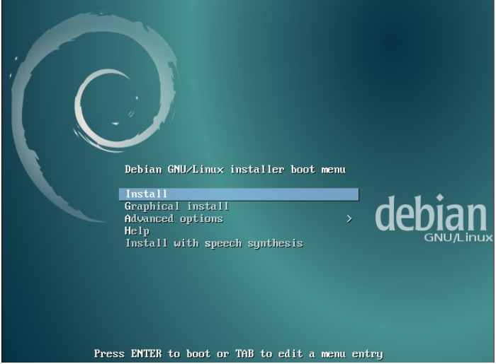
۲. در صفحه بعدی که ظاهر میشود زبان پیشفرضی را که میخواهید انتخاب کرده و Enter کنید.
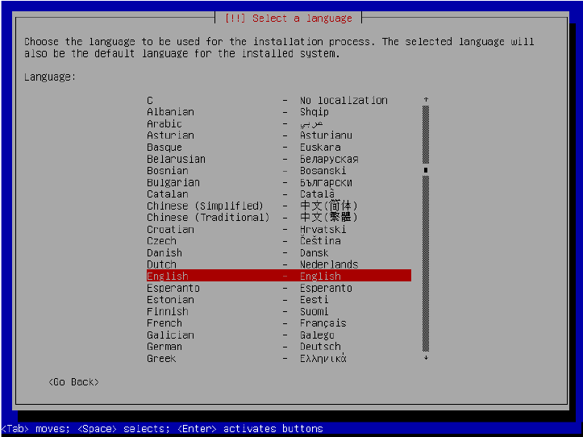
۳. در تصویر بعدی موقعیت مکانی را انتخاب کرده و Enter کنید.
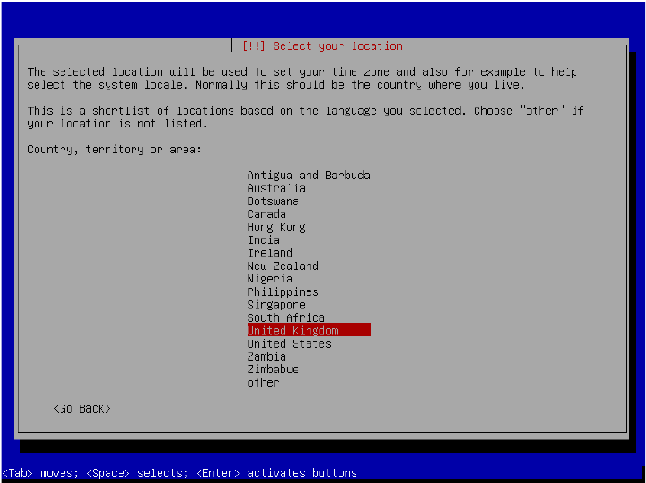
۴. چنان که در تصویر زیر مشاهده میکنید تنظیمات keyboard layout خودتان را انتخاب کنید و Enter کنید.دبیان معمولن زبانی را باید انتخاب کنید به شما پیشنهاد می دهد.
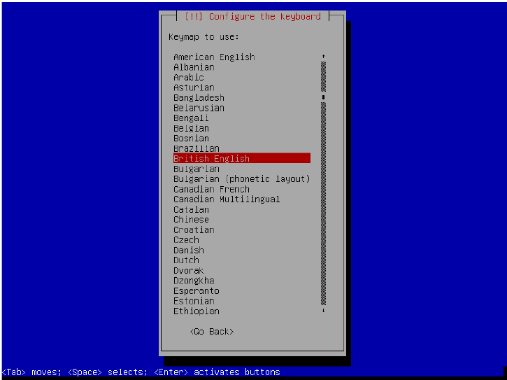
۵. فرآیند نصب اکنون چند مرحله را میگذراند و به صورت اتوماتیک شبکه شما را تنظیم می کند. اگر از اتصال سیمی استفاده میکنید احتمالن همه چیز به صورت اتوماتیک صورت خواهد گرفت و شما به مرحله بعد خواهید رفت . اگر شما شبکه بی سیم داشته باشید (وایرلس) ممکن است نوسط نصاب به صفحهای هدایت شوید تا در آنجا کارت شبکه خود را انتخاب کنید. اگر به صفحه ی primary network interface هدایت شدید eth0 را انتخاب کرده و Enter کنید.
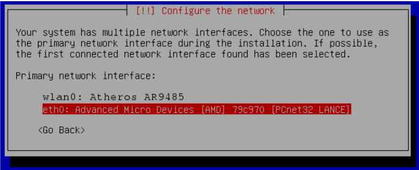
اگرچه پیشنهاد نمیشود اگر میخواهید در ادامه پروسه نصب از اتصال بی سیم استفاده کنید wlan0 را انتخاب کرده و Enter را بفشارید و در ادامه به صفحاتی هدایت میشوید که از شما نام شبکه بی سیم (SSID) ؛ پسورد و غیره را می خواهد.در خلال این گام ممکن است هشداری مبنی بر نیاز به نصب سفت افزار (firmware) از روی دیسک را دریافت کنید تا شبکه بی سیم به درستی کار کند. اگر به چنین پیامی هدایت شدید No را انتخاب کنید بجای آن از اینترنت سیمی استفاده کنید. شما میتوانید بعدن درایورهای بی سیم خود را جستوجو و بر اساس دستورالعملشان نصب کنید.
۶.در نهایت شما به صفحه Enter the hostname for this system هدایت می شوید. اینجا را به صورت پیشفرض یعنی debian رها کردن و Enter کنید.
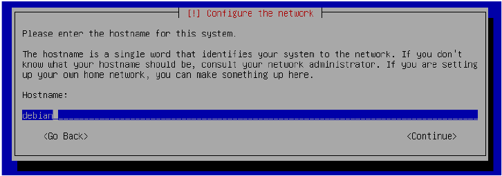
۷. در صفحه بعد از شما Domain name خواسته می شود. اینجا را خالی گذاشته و Enter کنید.
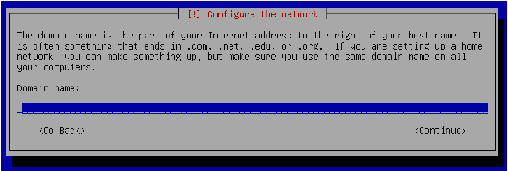
۸. در صفحه بعد از شما خواسته میشود که پسورد حساب کاربری root را انتخاب کنید. جای پسورد را خالی بگذارید تا حساب root غیر فعال بماند و بر روی Enter کلیک کنید. حساب root بالاترین دسترسی را بر روی سیستم دبیان دارد. نیازی نیست که حساب root داشته باشید. درواقع فعال بودن حساب روت دارای ریسک امنیتی است. شما میتوانید تمام دستورات root را با دستور sudo بعدن انجام دهید.
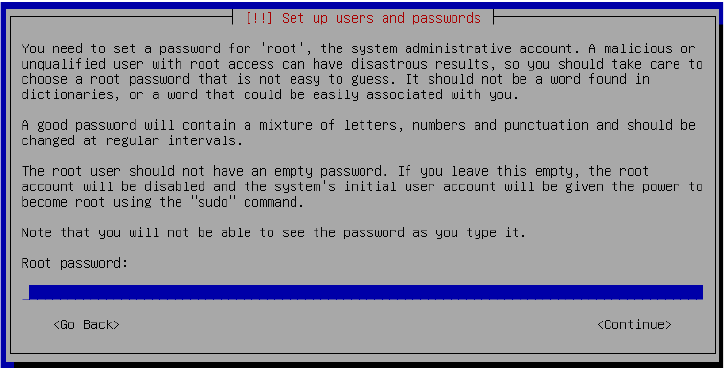
۹. صفحه بعدی که ظاهر میشود از شما تکرار دوباره پسورد را میخواهد به سادگی Enter کرده و ادامه دهید.
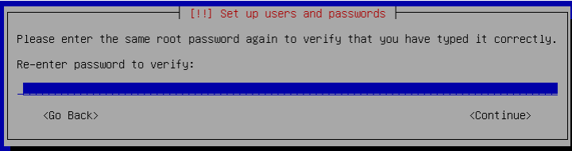
۱۰. صفحه بعدی از شما Full name of the new user (نام کامل کابر جدبد) را میخواهد. این را خالی گذاشته و Enter کنید.
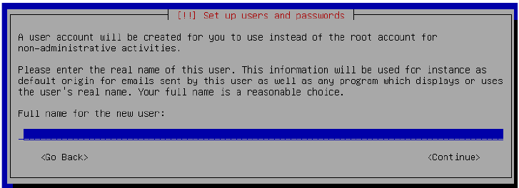
۱۱. در صفحهای که ظاهر میشود Username for your account ( نام کاربری اکانتتان) را وارد کنید که در اینجا تایپ کنید user و Enter کنید.
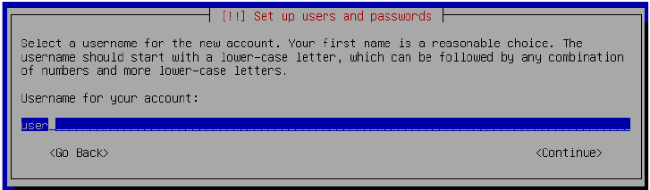
۱۲. در ادامه از شما خواسته میشود که برای کاربر جدید پسورد انتخاب کنید (choose a password for the new user). این برای شما بسیار مهم است که پسوردی قوی انتخاب کنید پسوردی ۸ کاراکتری هرگز پسورد خوبی نیست. ترجیحن چیزی انتخاب کنید که به یاد ماندنش برای شما آسان باشد و همچنین طولانی باشد. از حروف بزرگ و کوچک و سمبل ها و اعداد استفاده کنید.
راههای زیادی وجود دارد که مردم پسورد های قوی که یادشان بماند می سازند. برخی از مردم ترکیبی رندوم از کلمات را انتخاب میکنند که در بین آن سمبل هایی وجود داشته باشد. مثل: Horse-Atlant1c!Ocean-Cheese برخی هم از کلمات بیمعنی استفاده می کنند. پسورد مثال زده شده هم به اندازهی کافی بیمعنی است که کسی نتواند احتمالن آن را حدس بزند. و نه شبیه به پسوردی است که بتوان در هیچ فایل دیکشنری پیدا کرد که بتوان از آن دیکشنری برای حملات کرک استفاده کرد( حملات دیکشنری متدی برای کرک میباشد که پسوردهای احتمالی را در فایلی گردآوری میکنند و کامپیوتر تک تک لغات را تست میکند تا پسورد را پیدا کند) علاوه بر این پسورد شما؛ طیفی از کارکتر های روی کیبوردتان را میگیرد و به اندازه کافی طولانی خواهد بود که که نوان با حملات بروت فورس آن را حدس زد(حملات بروت فورس به گونهای از حملات گفته میشود که حروف الفبا؛ کاراکتر و سمبل ها را به صورت ترکیبی و اتوماتیک استفاده می کنند تا کلمات جدیدی ساخته و پسورد را حدس بزند.) برای هر پسوردی که که می سازید این متد را استفاده کنید فقط به یاد داشته باشید که پسوردی قوی بسازید و سپس Enter کنید.
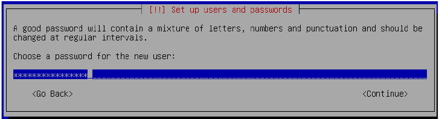
۱۳. زمانی که از شما خواسته شد پسوردتان را تکرار کنید این کار را آنجام دهید و Enter کنید.
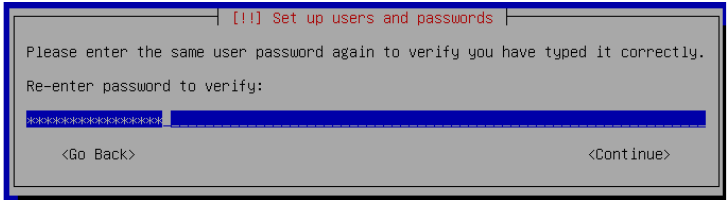
۱۴. بر اساس موقعیت مکانیتان ممکن است از شما موقعیت زمانیتان پرسیده شود( time zone) اگر چنین چیزی خواسته شد موقعیت زمانی خود را انتخاب کنید
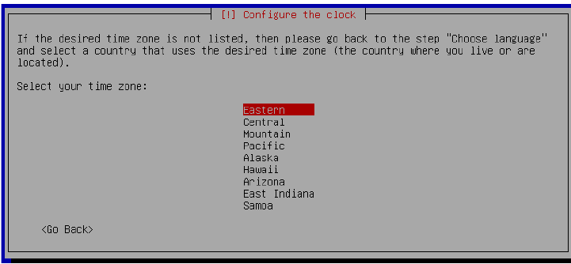
پس از تکمیل فرآیند به فصل دوم بروید.